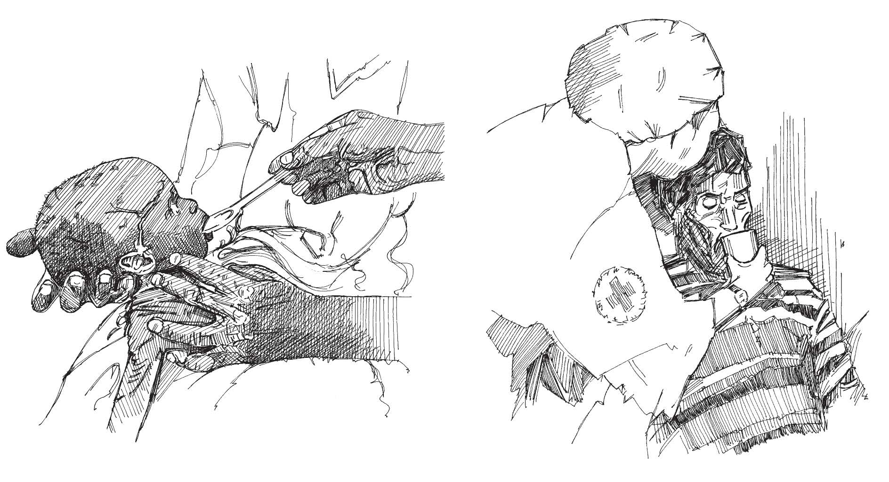

Resumen
- La solución de rehidratación oral (SRO) es el primer paso para tratar a las personas que sufren diarrea y deshidratación.
- Si un paciente no tiene signos de deshidratación o signos de deshidratación leve (consulte la Herramienta de acción 7 ), puede ser tratado en el hogar.
Para AUSENCIA de deshidratación
- Demuestre cómo preparar y administrar la SRO.
- El cuidador debe dar la cantidad de SRO indicada en la tabla abajo.
| Edad |
Cantidad de SRO luego de cada deposición suelta |
Paquetes de SRO requeridos |
| Menos de 24 horas |
50-100 ml (1⁄4 – 1⁄2 taza) |
1 paquete/día |
| 2-9 años |
100–200 ml (1⁄2 – 1 taza) |
1 paquete/día |
| 10 años o más |
Tanto como se desee |
2 paquetes/día |
Cuando hay algunos signos de deshidratación
- Dé la cantidad recomendada de SRO (medida contra la edad o el peso del paciente).
- Si el paciente pasa heces acuosas o quiere más SRO de lo que se muestra en la tabla anterior, dé más.
- Si el paciente no mejora o aparecen algunos signos de deshidratación severa, refiérelo a un centro de salud (vea la Herramienta de acción 4 ).
| Edad |
Menos de 4 meses |
4-11 meses |
12-23 meses |
2-4 años |
5-14 años |
15 años o más |
| Peso |
Menos de 5 kg |
5-7.9 kg |
8-10.9 kg |
11-15.9 kg |
16-22.9 kg |
30 kg o más |
| Solución oral |
200-400 (1-2 tazas) |
400-600 (2-3 tazas) |
600-800 (3-4 tazas) |
800-1200 (4-6 tazas) |
1200-2200 (6-11 tazas) |
2200-4000 (11-20 tazas) |
¿Cómo dar SRO?
Es importante enseñar a las madres y cuidadores a administrar correctamente la SRO a los niños, para ayudar a que el niño mejore y prevenir la propagación de la epidemia.
- A un niño menor de dos años, dé una cucharadita cada 1-2 minutos.
- A un niño mayor, dé sorbos frecuentes de una taza.
- Si el niño vomita, espere 10 minutos y luego ofrezca la solución de nuevo, más despacio.
- Si la diarrea continúa después de que se agotan los paquetes de SRO, dé remedios hasta que obtenga más paquetes de SRO.
- Dé al niño tanta cantidad de agua como pueda beber.
- Continúe evaluando la deshidratación y refiera al niño a una clínica si él o ella empeora o no mejora después de unas horas.

Administrar la SRO a un niño. Administrar la SRO a un adulto